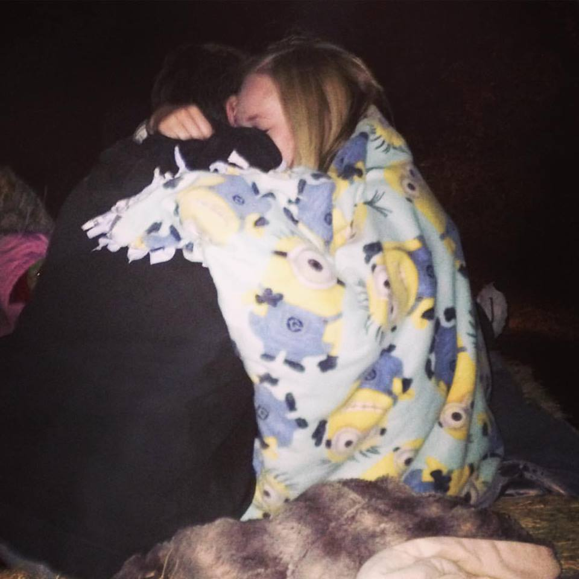

How He Popped The Question
During her family's hayride, one of Taylor's friends sent Taylor a text that told Taylor to go to this website to enter to win tickets. Her friend had already went to this website, entered, and won tickets to see Britney Spears in Las Vegas, NV. Taylor had to try to win these tickets immediately. Incredibly, Taylor won tickets too!!
However, this was not the actual case. Jason actually set up the text from her friend and created the website. Knowing how much Taylor loved Britney Spears, Jason hoped Taylor would get distracted by "winning tickets" and would not pay attention to him getting down on one knee. Luckily, her uncle was recording the entire thing to see that...
SHE SAID "YES!"
(Video shown below)